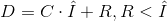
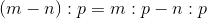
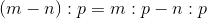
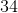
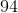
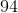
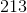
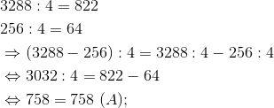

Împărțirea numerelor naturale
Definiția NN14: Împărțirea cu rest a numerelor naturale
Introducem următoarele noțiuni:
- Așa cum operația inversă adunării este scăderea, operația inversă înmulțirii este împărțirea.
- Într-o împărțire avem în primul rând numărul care se împarte, numit deîmpărțit și numărul la care împărțim, numit împărțitor.
- Efectuând împărțirea, obținem încă două numere, câtul și restul, care trebuie să fie obligatoriu mai mic decât împărțitorul.
Notații:
 - deîmpărțitul;
- deîmpărțitul;
 - împărțitorul;
- împărțitorul; - câtul;
- câtul; - restul.
- restul.
Observație:
Împărțirea a două sau mai multe numere naturale poate fi exactă sau cu rest.
Teorema NN15: Teorema împărțirii cu rest
Numerele  și verifică egalitatea:
și verifică egalitatea:
.
Altfel spus, prin efecturarea împărțirii a două numere naturale oarecare și se obțin și sunt unice două numere naturale și care verifică egalitatea anterioară.
Observație:
În cazul în care restul  , putem spune că împărțirea este exactă.
, putem spune că împărțirea este exactă.
Restul  se obține atunci când deîmpărțitul este multiplu al împărțitorului , adică există un unic număr natural , cât al împărțirii lui la care verifică relația:
se obține atunci când deîmpărțitul este multiplu al împărțitorului , adică există un unic număr natural , cât al împărțirii lui la care verifică relația:
 .
.
Relația de mai sus este echivalentă cu  (împărțire exactă).
(împărțire exactă).
Observație:
Nu se pot efectua:
 ;
; , oricare ar fi
, oricare ar fi  un număr natural.
un număr natural.
Înmulțind sau împărțind, atunci când se poate, factorii unui cât cu același număr natural, rezultatul împărțirii nu se schimbă.
Observație:
Împărțirea nu este:
- comutativă, deoarece nu putem împărți un număr natural mai mic la un număr natural mai mare;
- asociativă;
- nu are element neutru.
Exemple:
- Avem că
 și
și  .
. - Avem că
 .
.

Proprietățile împărțirii numerelor naturale
Propoziția NN16: Proprietăți
Împărțirea numerelor naturale satisface următoarele proprietăți:
 , oricare ar fi număr natural nenul;
, oricare ar fi număr natural nenul;- dacă numerele naturale oarecare și
 se împart exact la numărul natural nenul
se împart exact la numărul natural nenul  , atunci :
, atunci :  ;
; - dacă numerele naturale oarecare și se împart exact la numărul natural nenul și diferența
 are sens atunci: ;
are sens atunci: ; - dacă numerele naturale oarecare și se împart exact la numărul natural nenul și
 , atunci:
, atunci:  .
.
Împărțirea numerelor naturale - exemple
- Calculăm
 împărțit la
împărțit la  . Numărul este deîmpărțitul, iar este împărțitorul.
. Numărul este deîmpărțitul, iar este împărțitorul.

Împărțirea se face de la stânga spre dreapta.
Observăm că nu intră în  .
.
Observăm că intră exact de  ori în
ori în  , adică se împarte la . se scrie sub , iar produsul dintre și se trece sub primele două cifre ale deîmpărțitului.
, adică se împarte la . se scrie sub , iar produsul dintre și se trece sub primele două cifre ale deîmpărțitului.
Se face scăderea dintre numărul format din primele două cifre ale deîmpărțitului și rezultatul înmulțirii lui cu , adică . Dacă la scădere se obține , în locul acestuia se pune  „
„ ”.
”.
Se coboară următoarea cifră din deîmpărțit și se verifică de câte ori intră în aceasta. Cum cifra următoare este , intră în de ori, astfel că sub , după , vom trece .
Înmulțim cu și rezultatul îl trecem sub cifra coborâtă ultima și facem scăderea. Obținem , deci trecem „”.
Coborâm următoarea cifră, . intră o data în 5, deci, sub , după , vom trece  .
.
Înmulțim cu și trecem rezultatul sub . Facem scăderea și obținem .
Împărțirea nu poate continua, întrucât nu mai avem cifre de coborât.
 se numește cât, iar se numește rest.
se numește cât, iar se numește rest.
Deîmpărțitul poate fi scris astfel:
 .
.
Observație:
Acest raționament se folosește la împărțirea oricăror două numere naturale.
- Calculăm
 împărțit la
împărțit la  . Primul număr este deîmpărțitul, iar al doilea este împărțitorul.
. Primul număr este deîmpărțitul, iar al doilea este împărțitorul.
.png)
Observăm că împărțitorul are două cifre, deci verificăm de câte ori intră în grupul format din primele două cifre ale deîmpărțitului.
Observăm că intră de ori în . Trecem sub , iar apoi înmulțim cu și trecem rezultatul,  , sub .
, sub .
Se face scăderea și obținem  . În acest caz nu putem pune „” în loc de , deoarece înaintea acestuia mai avem o cifră, pe .
. În acest caz nu putem pune „” în loc de , deoarece înaintea acestuia mai avem o cifră, pe .
Coborâm următoarea cifră și verificăm de câte ori intră în  . Obținem
. Obținem  și îl trecem lângă , sub . Se înmulțește cu și rezultatul se trece sub . Prin scădere obținem
și îl trecem lângă , sub . Se înmulțește cu și rezultatul se trece sub . Prin scădere obținem  , dar cum înaintea celor doi de nu avem cifre, se trece „” în locul lor.
, dar cum înaintea celor doi de nu avem cifre, se trece „” în locul lor.
Se coboară următoarea cifră și obținem că intră de  ori în . Cifra o trecem după , o înmulțim cu și rezultatul îl scădem din . Obținem .
ori în . Cifra o trecem după , o înmulțim cu și rezultatul îl scădem din . Obținem .
Coborâm ultima cifră și avem că intră de ori în  . Se trece după și se înmulțește cu . Rezultatul îl scădem din și obținem .
. Se trece după și se înmulțește cu . Rezultatul îl scădem din și obținem .
Ne oprim la acest pas, deoarece nu mai avem cifre de coborât.
Deci, câtul împărțirii este  , iar restul este .
, iar restul este .
Deîmpărțitul poate fi scris astfel:

 , deoarece există astfel încât
, deoarece există astfel încât  .
.

Împărțitorul fiind de două cifre, verificăm de câte ori intră în numărul format din primele două cifre ale deîmpărțitului.
Observăm că intră o dată în ; deci, sub scriem cifra .
Înmulțim cu și trecem rezultatul sub .
Scăzând, prima cifră este , deci, punem egal, iar a doua cifră este .
Coborâm ultima cifră, obținem și observăm că intră exact de 2 ori în .
Scriem cifra sub , înmulțim cu și rezultatul se trece sub 20.
Scăzând din , obținem .
Deci, această împărțire nu are rest. Cu alte cuvinte, împărțirea aceasta este exactă.
 , deoarece există
, deoarece există  astfel încât
astfel încât  .
.

Împărțitorul are două cifre, deci, verificăm de câte ori intră  în numărul format cu primele două cifre ale deîmpărțitulul și anume .
în numărul format cu primele două cifre ale deîmpărțitulul și anume .
nu se împarte la ; așadar, luăm în considerare numărul format de primele trei cifre, și anume  .
.
Căutăm un număr, care înmulțit cu să obținem . Numărul căutat este , deci, spunem că intră de exact ori în . Trecem sub .
Înmulțim cu și rezultatul îl trecem sub .
Observăm că avem de scăzut cu ; deci, rezultatul va fi . Ca urmare, vom trece sub scădere trei semne „”.
Coborâm următoarea cifră și ultima. Observăm că întră în de ori, fiindcă doar înmulțit cu dă .
Trecem sub în partea dreaptă, îl înmulțim cu și rezultatul se trece în stânga.
Scăzând din obținem , ceea ce înseamnă că nu avem rest și împărțirea este exactă.
 , deoarece există
, deoarece există  astfel încât
astfel încât  .
.

Cum împărțitorul are trei cifre, se verifică de câte ori intră acesta în numărul format cu primele trei cifre ale deîmpărțitului, adică de câte ori numărul respectiv se poate împărți la .
Observăm că intră o singură data în  . Atunci, sub împărțitor trecem cifra . Se înmulțește cu și rezultatul se trece sub .
. Atunci, sub împărțitor trecem cifra . Se înmulțește cu și rezultatul se trece sub .
Facem scăderea și obținem  .
.
Coborâm ultima cifră rămasă și observăm că intră de exact ori în  .
.
Înmulțind cu , obținem .
Scăzând din 1065 se obține , deci nu avem rest.
- Aplicăm proprietățile împărțirii numerelor naturale din Propoziția NN16.
- Verificăm dacă , pentru
 .
.


- Avem:


- Avem:


- Avem: